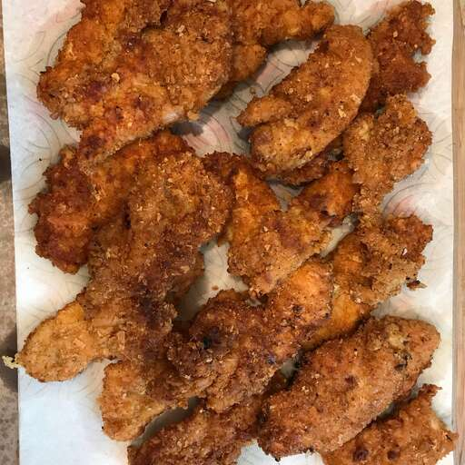

Chicken Fried Chicken

Description
Fry chicken, turning frequently, until golden brown and juices run clear, 15 to 20 minutes.
A fun chicken recipe the kids can help prepare.
They love crushing the crackers. It does not matter
if the measurements aren't perfect, just wing it!
Ingredients
- 30 saltine crackers
- 2 tablespoons all-purpose flour
- 2 tablespoons dry potato flakes
- 1 teaspoon seasoned salt
- 1/2 teaspoon ground black pepper
- 1 egg
- 6 skinless, boneless chicken breast halves
- 2 cups vegetable oil for tying
Steps
-
Place crackers in a large resealable plastic bag;
seal bag and crush crackers with a rolling pin until
they are coarse crumbs. Add the flour, potato flakes,
seasoned salt, and pepper and mix well.
-
Beat egg in a shallow dish or bowl. One by one,
dredge chicken pieces in egg, then place in bag with crumb mixture.
Seal bag and shake to coat.
- Heat oil in a deep-fryer or large saucepan to 350 degrees F (175 degrees C).
-
Fry chicken, turning frequently, until golden brown and juices run clear,
15 to 20 minutes.